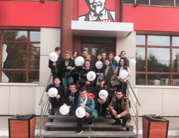
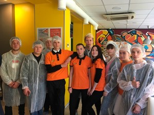

Экскурсии в Додо Пицца и KFC 2019
В течение первых месяцев обучения группа 1–43.01ПКА и группа 1–43.01ПКБ по профессии «Повар, кондитер» посетили несколько предприятий общественного питания г. Чайковский. Содержательные и интересные экскурсии прошли в рамках дисциплины «Введение в профессию». Цель экскурсий: ознакомление обучающихся с организацией работы предприятий общественного питания, привитие интереса к профессии, подготовка обучающихся к будущей практической деятельности на производстве. Экскурсия в ресторан быстрого питания «КFС» была первой, поэтому было интересно узнать, как все устроено. Перед тем как зайти на кухню, всем выдали санитарную форму, состоящую из халата, шапочки и бахил. Зайдя в цех, обучающиеся узнали о необходимости соблюдения правил санитарии и гигиены в процессе приготовления пищи, познакомились с ассортиментом продукции и организацией рабочего места, современным оборудованием и инвентарем, используемым на предприятии. Первокурсники увлеченно слушали рабочий персонал, выступающий в качестве экскурсовода. По окончании нас угостили выпускаемой продукцией и наградили воздушными шарами. Следующий экскурсией был поход в «ДоДо пицца». Здесь подробно рассказали, как и благодаря какому оборудованию готовится пицца, и показали камеры для хранения продуктов. Обучающиеся изучили структуру технологической и калькуляционной карты, увидели «живой» процесс приготовления пиццы. Нам посчастливилось провести всю экскурсию в фирменной форме, которая выпускается специально для рабочего персонала данного заведения. В ходе экскурсий многие интересовались режимом работы, заработной платой, условиями приема на работу, условиями труда. На всех предприятиях обучающиеся получили подробные ответы на свои вопросы и массу положительных впечатлений.

